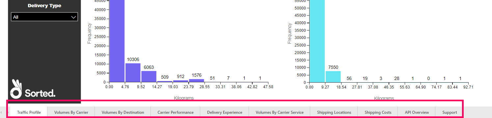
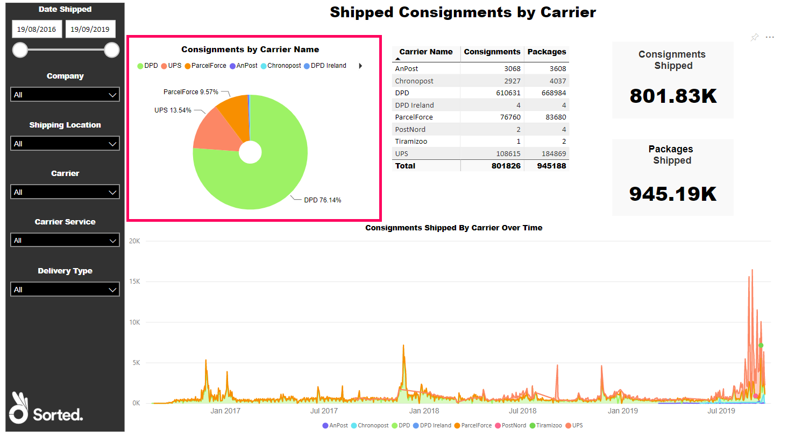
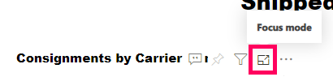
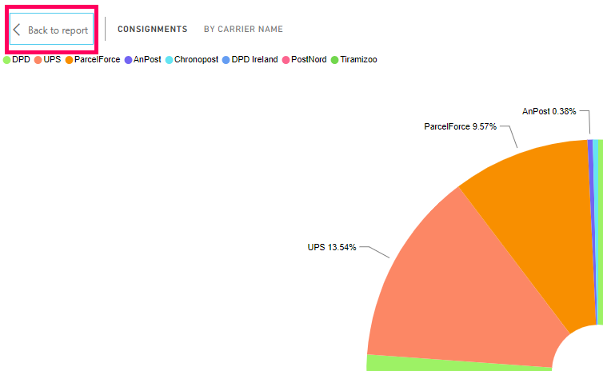

Getting Started
How to access the Sorted PRO reports, and select the report you need.
Accessing the App
The Sorted PRO reports are published as a self-contained Microsoft Power BI app. The app runs via the web-based Power BI Service - you don't need to install any software to view PRO reports.
We provide each PRO customer with one Power BI Pro license, which grants access to view the reports. When you sign up for the service, you'll need to give us the email address of the user you want to assign that license to. We'll then set them up and send them an access link to the reports.
Note:
The access link is unique to an individual user - it won't work for anyone who has not been granted specific access and the relevant Power BI license.
Click the access link to open the reports. Alternatively, you can access the reports from within Power BI by clicking Shared with me from the left-hand toolbar and selecting Multi-Company Customer Report from the list of shared reports.

Viewing Reports
When you open the app, the Traffic Profile report is displayed. To select other reports in the collection, use the tabs at the bottom of the screen.
Each PRO report is a collection of data visuals (such as charts, tables, and maps) that gives you an overview of a particular aspect of your shipping performance. For example, the Volumes by Carrier report features a table listing how many consignments and packages each of your carriers has shipped, a pie chart showing the share of your total consignments that shipped with each of your carriers, and a chart showing each carrier's total shipments over time.

These three visuals enable you to get a picture of how much of your shipment volume each carrier is handing.
Note:
Sorted takes data confidentiality very seriously. Each Sorted customer can only use the app to view their own organisation's data.
Focus mode
Power BI's Focus mode enables you to expand a visual or tile to see more detail. All other visuals on the report are temporarily hidden.

To open a visual in Focus mode, hover your mouse pointer over it and click the Focus Mode button.
To return to the full report when in Focus mode, click the Back to Report button.
Next Steps
- For an overview of filters and visual options, see the Filters and Options page.
- For further details on the reports themselves, see the Reports section.